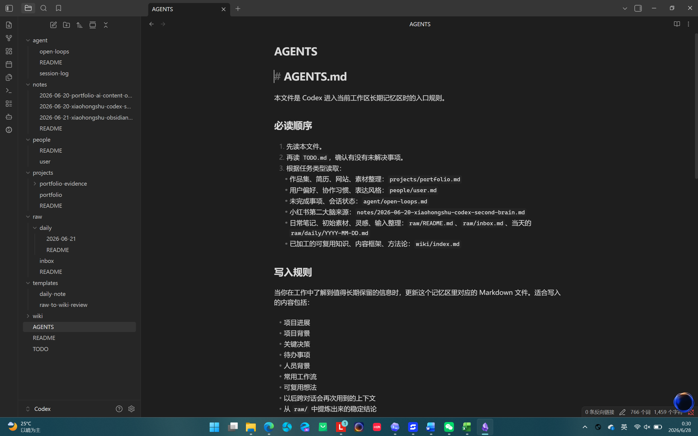

项目笔记
把思感集、公众号文章、AI 生成内容、展览体验和网站修改记录分开保存，避免材料混在一起。
PROJECT 04 / MATERIAL ARCHIVE
观察档案不是单独的灵感相册，而是我在 Obsidian 里长期维护的记忆库：照片、走路时的记录、朋友圈观察、用户体验现场、心理和艺术资料、AI 工具笔记都会先被保存下来。
它的作用不是立刻产出作品，而是让零散材料可以被再次找到、重新组合，并在后来的文章、影像、展览和网站结构里继续生长。
OBSIDIAN MEMORY
把思感集、公众号文章、AI 生成内容、展览体验和网站修改记录分开保存，避免材料混在一起。
用边界、身体、关系、规训、表达、AI 工具等主题，把不同项目里的材料重新连起来。
记录真实表达、情绪语气和社交平台上的微小叙事。
看不清、找不到、没地方坐、交互失败，这些都是内容和设计问题的早期信号。
路灯、雪夜、楼梯、窗口、廉价食物和散步，为内容提供具体场景。
情绪、身体、表达、疗愈和存在主义，为议题提供深层结构。
MEMORY STRUCTURE
我把 Obsidian 当成长期记忆库使用。它不只保存“资料”，也保存材料之间的关系：一条朋友圈观察可能后来进入公众号选题，一张城市照片可能成为展览现场的语气参考，一段心理记录也可能进入《坠落静默》的故事判断。
ARCHIVE STATUS
当前只保留一张 Obsidian 记忆库截图作为可见证据，用来说明材料不是散落在单个文件夹里，而是被放进长期协作和回看的结构中。

FROM MEMORY TO PROJECT
SUMMARY
观察档案留下的是项目开始之前的材料，也留下这些材料被保存、分类和重新调用的方式。Obsidian 记忆库让它不只是零散素材，而是一套可以持续回看的内容底座。
部分观察后来进入了具体项目：思感集、AI 生成内容专题、展览体验和这个网站本身。
本网站由我独立策划、整理和完成。过程中使用 ChatGPT、Codex 等模型辅助结构梳理、文字修改和代码实现；内容判断、材料取舍和最终表达由我负责。